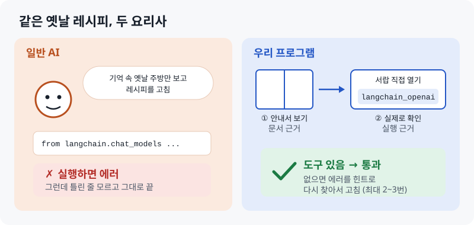

SKN35 · LLM 연동 내외부 문서 기반 질의응답 시스템
LangChain 버전
마이그레이션 도우미
문서 근거와 실행 근거로 이중 검증하는 코드 변환 챗봇
[팀 이름] · 발표 [발표자 이름] · [발표일]
발표자 노트
안녕하세요, [팀 이름]입니다. 저희는 구버전 LangChain 코드를 최신 버전으로 바꿔 주고, 바꾼 코드가 실제로 동작하는지까지 확인해 주는 챗봇을 만들었습니다. 핵심은 '문서 근거'와 '실행 근거' 두 가지로 검증한다는 점입니다.
문제
ChatGPT가 준 LangChain 코드, 실행하면 깨집니다
# LLM이 흔히 주는 코드
from langchain.chat_models import ChatOpenAI
from langchain.chains import LLMChain
# LangChain 1.4.4에서 실행 결과
ImportError: cannot import name 'ChatOpenAI'
ModuleNotFoundError: No module named 'langchain.chains'
첫 줄부터 에러
LangChain 1.0에서 패키지가 나뉘고, 옛 체인과 에이전트가 빠졌습니다.
더 큰 문제
LLM은 자기 답이 틀렸다는 것을 모릅니다.
LangChain 마이그레이션 도우미 · 2
발표자 노트
수업 중에 강사님도 말씀하셨듯이, LangChain을 LLM에게 물어보면 복잡한 질문일수록 구버전 코드를 줍니다. 왼쪽 코드는 실제로 LangChain 1.4.4 환경에서 실행한 결과입니다. 첫 줄부터 에러가 납니다. 더 큰 문제는 LLM이 이게 틀렸다는 걸 모른다는 점입니다. [가능하면 ChatGPT에게 실제로 물어본 답변 캡처로 왼쪽 코드를 교체]
원인: 버전 지체 환각
인터넷에는 구버전 코드가 더 많습니다
LLM은 데이터가 많은 쪽을 따라갑니다. 라이브러리는 빠르게 바뀌지만, 학습 데이터 속 코드는 대부분 과거 버전입니다.
42.55%
문서가 부족할 때, LLM 코드 중 목표 버전에서 실행되는 비율
When LLMs Lag Behind, 2026
66.36%
구조화된 문서를 줘도 실행되는 비율
When LLMs Lag Behind, 2026
48~51%
최신 상용 모델의 버전 지정 코드 생성 성공률
GitChameleon 2.0, 2025
LangChain 마이그레이션 도우미 · 3
발표자 노트
이 현상을 '버전 지체 환각'이라고 부르겠습니다. 연구 결과도 같은 이야기를 합니다. 문서가 부족하면 LLM이 만든 코드 중 약 43%만 실행되고, 문서를 줘도 66% 정도에 머뭅니다. 즉 문서만 주는 것으로는 부족하고, 실제로 실행해서 확인하는 단계가 필요하다는 뜻입니다. 이게 저희 프로젝트의 출발점입니다. (출처: arXiv 2604.09515, arXiv 2507.12367)
쉽게 보면
도구가 새 서랍으로 이사 갔습니다

LangChain 마이그레이션 도우미 · 4
발표자 노트
코드를 모르는 분도 이해하기 쉽게 주방으로 비유해 보겠습니다. LangChain은 주방 도구 세트이고, import는 "어느 서랍에서 어떤 도구를 꺼내라"는 뜻입니다. 1.0에서 주방을 새로 정리하면서 ChatOpenAI는 새 서랍으로 이사 갔고, LLMChain은 창고로 치워졌고, initialize_agent는 없어졌습니다. 그런데 AI는 옛날 주방만 기억해서 옛날 서랍을 열라고 알려 줍니다. 그래서 에러가 납니다.
해결
문서로 한 번, 실행으로 한 번 더 확인합니다

LangChain 마이그레이션 도우미 · 5
발표자 노트
저희 해결책은 이중 검증입니다. 일반 AI는 기억 속 옛날 주방만 보고 고치기 때문에, 실행하면 에러가 나도 모르고 끝납니다. 저희 프로그램은 첫째, 최신 공식 문서를 찾아보고 고칩니다. 이게 문서 근거입니다. 둘째, 고친 코드를 최신 LangChain 환경에서 실제로 실행해서 서랍에 도구가 있는지 확인합니다. 이게 실행 근거입니다. 없으면 에러를 힌트로 다시 찾아서 최대 3번까지 고칩니다. 그래서 답변에는 코드뿐 아니라 근거 링크와 몇 번 만에 통과했는지가 함께 나옵니다. (비교 요약: 근거 - 학습 데이터 vs 최신 공식 문서 / 확인 - 없음 vs import 실제 실행 / 틀렸을 때 - 모름 vs 재검색 후 재작성 / 답변 - 코드만 vs 코드+근거+시도 횟수)
시스템 구조
다섯 단계 파이프라인, 실패하면 되돌아갑니다

LangChain 마이그레이션 도우미 · 6
발표자 노트
전체 구조는 LangGraph로 만든 다섯 단계 파이프라인입니다. (GitHub 웹 버전으로 발표하면 레시피 카드가 직접 움직입니다.) analyzer가 바꿀 부분을 찾고, retriever가 공식 문서를 검색하고, rewriter가 그 근거로 코드를 다시 씁니다. 핵심은 파란색 verifier입니다. 최신 LangChain 환경에서 import를 실제로 실행해 보고, 실패하면 에러 메시지를 들고 retriever로 돌아가 다시 검색합니다. 최대 [3]번까지 시도합니다. 검색 원천은 LangChain 공식 문서(llms-full.txt, v1 마이그레이션 가이드)이고, 검증 환경은 langchain 1.4.4로 고정했습니다.
실험 설계
같은 코드 30개, 같은 조건으로 비교했습니다

쉬움 10개
import 경로만 바뀜
중간 10개
체인 구조 변경
어려움 10개
에이전트·메모리 변경
LangChain 마이그레이션 도우미 · 7
발표자 노트
공정한 비교를 위해 실험 규칙을 먼저 정했습니다. 저는 요리 대회 심사위원 역할입니다. 시험지는 난이도별로 10개씩 30개이고, 30개 모두 최신 LangChain에서 실제로 깨지는 것을 확인했습니다. 일반 AI와 우리 프로그램은 같은 모델 [모델명], temperature 0, 같은 입력을 쓰고, 똑같은 채점 로봇으로 판정합니다. 일반 AI에게는 "LangChain 1.x로 변환해 주세요"라는 고정된 문구만 줍니다. 성공 기준은 문법 통과, 모든 import 성공, 무효 변환 아님 세 가지입니다. LangChain import를 지워서 통과하는 식의 꼼수는 실격으로 처리했습니다.
데모
구버전 에이전트 코드가 통과하기까지
1
구버전 코드 입력
initialize_agent를 쓰는 에이전트 코드 [hard_01]
2
1회차 검증 실패
에러 메시지를 들고 공식 문서를 다시 검색 [실제 결과로 수정]
3
[2]회차 통과
create_agent로 변환, 근거 링크와 함께 답변
LangChain 마이그레이션 도우미 · 8 · 현장 데모 실패에 대비해 녹화본 준비
발표자 노트
이제 실제로 보여드리겠습니다. [화면 전환] 어려움 단계의 에이전트 코드를 넣어 보겠습니다. 첫 시도에서는 검증에 실패하고, 에러 메시지를 근거로 다시 검색합니다. 두 번째 시도에서 create_agent 방식으로 바뀌고 검증을 통과합니다. 답변에 근거 문서 링크와 시도 횟수가 같이 나오는 것을 봐 주세요. [데모 각본은 실제 실행 결과에 맞게 수정]
결과
어려운 코드일수록 차이가 커졌습니다
우리 시스템
[__]%
일반 LLM (baseline)
[__]%
전체 import 성공률, 테스트 코드 30개 기준
[그래프 삽입]
charts/1_success_by_difficulty.png
LangChain 마이그레이션 도우미 · 9
발표자 노트
결과입니다. 전체 성공률은 일반 LLM이 [__]%, 우리 시스템이 [__]%였습니다. 특히 어려움 단계에서 차이가 가장 컸습니다. 일반 LLM은 [__]%, 우리 시스템은 [__]%입니다. 에이전트처럼 구조 자체가 바뀐 코드일수록 기억에만 의존하는 LLM이 구버전 방식을 그대로 쓰는 경향이 컸습니다. [실제 결과를 보고 제목과 설명을 수정]
검증 루프 효과
실행 검증이 성공률을 [+__%p] 끌어올렸습니다
[그래프 삽입]
charts/2_retry_effect.png
1회차 성공률
[__]%
최종 성공률 (최대 3회)
[__]%
성공까지 평균 시도
[__]회
LangChain 마이그레이션 도우미 · 10
발표자 노트
이 그래프가 저희 프로젝트의 핵심 근거입니다. 첫 시도만 보면 성공률이 [__]%인데, 실패한 코드를 에러 메시지로 다시 검색해서 고치면 최종 [__]%까지 올라갑니다. 즉 '실행해서 확인하고 다시 고치는' 루프가 [__]%p를 만들어 냈습니다. 일반 LLM은 이 루프가 없기 때문에 틀려도 그대로 끝납니다.
실험 중 발견
통과했다고 끝이 아니었습니다
지원 종료 중인 패키지
langchain-community는 import만 해도 "지원 종료 중" 경고를 냅니다. 지금은 통과해도 곧 깨질 수 있습니다.
2026-10-12 확인 · langchain-community 0.4.2
classic 우회
LLMChain을 langchain_classic에서 가져오면 import는 통과하지만, 최신 방식으로 바꾼 것은 아닙니다.
[그래프 삽입]
charts/3_success_quality.png
LangChain 마이그레이션 도우미 · 11
발표자 노트
실험하면서 예상하지 못한 것을 두 가지 발견했습니다. 첫째, langchain-community 패키지는 import만 해도 지원 종료 경고가 나옵니다. 버전은 지금 이 순간에도 바뀌고 있다는 뜻입니다. 둘째, 옛 체인을 langchain_classic에서 가져오면 import는 되지만 최신 방식은 아닙니다. 그래서 단순 성공률 외에 '성공의 질'을 따로 집계했습니다. 오른쪽 그래프에서 우리 시스템은 깔끔한 성공 비율이 [__]%, 일반 LLM은 [__]%였습니다.
가치
라이브러리가 바뀔 때마다,
근거와 함께 확인된 코드
시간 절감
개발자가 에러를 직접 추적하는 시간을 줄임 [__분 → __분]
신뢰
근거 문서 링크와 검증 통과 여부를 함께 제시
확장
문서와 검증 환경만 바꾸면 다른 라이브러리에도 적용
LangChain 마이그레이션 도우미 · 13
발표자 노트
이 시스템의 가치를 세 가지로 정리하겠습니다. 첫째, 개발자가 버전 에러를 직접 찾아 고치는 시간을 줄여 줍니다. 둘째, 답변마다 근거 문서와 검증 결과가 붙어 있어서 믿고 쓸 수 있습니다. 셋째, 구조가 문서와 검증 환경에만 의존하기 때문에 LangChain뿐 아니라 빠르게 바뀌는 다른 라이브러리에도 그대로 적용할 수 있습니다. [시간 절감 수치는 측정했을 때만 넣고, 없으면 괄호 부분 삭제]
팀
1번
그래프 · 백엔드
[이름]
2번
데이터 · 검색
[이름]
3번
변환 · 화면
[이름]
4번
검증 · 평가 · 발표
[이름]
감사합니다
질문 받겠습니다 · [GitHub 저장소 주소]
발표자 노트
저희 팀은 이렇게 역할을 나눠 진행했습니다. 감사합니다. 질문 받겠습니다. [예상 질문 대비: import만 검증하면 충분한가 → 한계 슬라이드 / 30개로 충분한가 → 난이도별 경향 확인이 목적 / 왜 LLM에게 검증을 맡기지 않았나 → 검증 LLM도 같은 구버전 지식을 가짐]